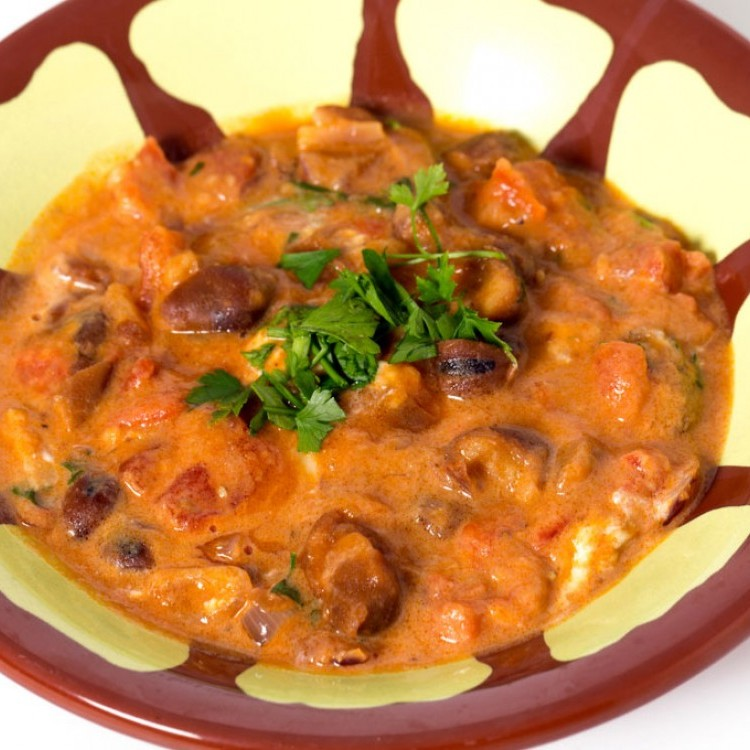

يعد الفول أحد المحاصيل القديمة التي عرفتها الحضارات
البشرية،فهو غذاء صحي غني بالألياف، ومصدرٌ للبروتينات
والطاقة، وفي المنطقة الغربية تنتشر محلات بيع
الفول، ويتناوله الناس في وجبة الإفطار

من الأطباق التي تقدم في وجبة الإفطار، ويعدها
النساء عن طريق غلي الورد الطائفي مع السكر. ويعد
من الأطباق المفيدة خاصة لآلام المعدةوهو من
الأطباق القديمة في الطائف.
وجبة اشتهرت في المنطقة الغربية، وتقدم غالبا وجبة
عشاء، حيث تقدم مع السمك الناشف أو تؤكل مع السمن فقط.
من المشروبات الرمضانية الباردة، ويعمل أيضا في فصل الصيف مشروبا
باردًا ومنعشًا، وله طريقتان في التحضير: إما بالشعير أو الزبيب، وإما من
بقايا الخبز المصنوع من الدقيق الأبيض.